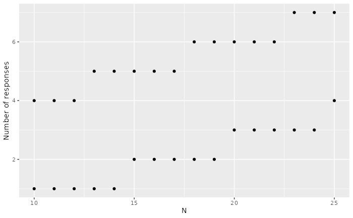
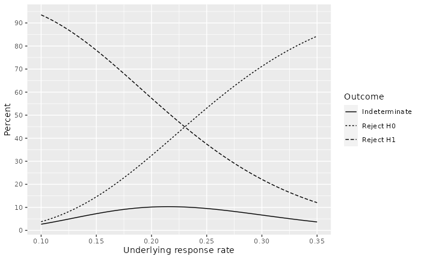
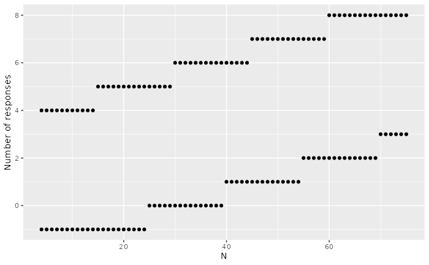
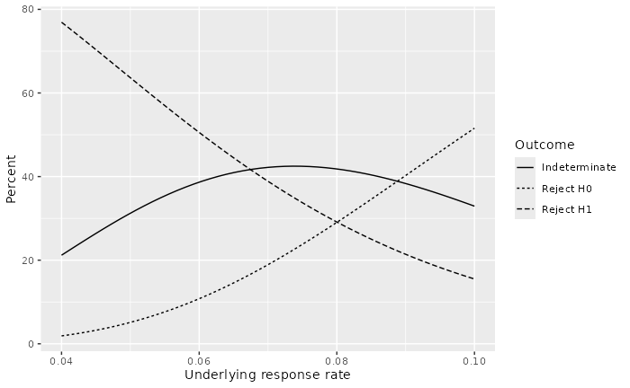

Overview
The sequential probability ratio test (SPRT) was proposed by Wald (1947), Wald and
Wolfowitz (1948). as a way to do continuous sampling to establish
or raise concerns about product quality. There is a wide literature on
this topic which we do not attempt to summarize here. In clinical
trials, the SPRT for a single arm binary endpoint can be useful to raise
or alleviate concerns about a short-term endpoint such as occurrence of
an important safety endpoint or, for efficacy, a response rate. The
function binomialSPRT() implements a single arm version of
the SPRT for a binary outcome. While comparative SPRT tests are also
available for comparing multiple arms, we do not cover those here.
You may think that having an sequential design for a trial obligates you to do an evaluation after every observation. An alternative view is that you can analyze whenever you want and not worry about whether Type I error is controlled.
Response rate example
Consider a single arm where there is historical data suggesting the a positive response to treatment occurs in no more than 10% of patients with currently available treatments. Assume that there is interest in having the trial be well-powered to detect a response rate of 35% in a new treatment. The SPRT is defined as a continuous testing procedure without a maximum sample size. Practically speaking, this is implemented with a minimum and maximum sample size. For our example we assume a minimum sample size of 10 and a maximum sample size of 25. We will initially set a one-sided Type I error of \alpha=0.08 and power of 80% (1-\beta = 0.2):
b <- binomialSPRT(p0 = .1, p1 = .35, alpha = .08, beta = .2, minn = 10, maxn = 25)
plot(b)
The above plot tests first after 10 patients. If 4/10 have responded, you can reject the null hypothesis of a 10% response rate. If 0 or 1 of 10 have responded, you can conclude that the targeted 35% response rate is not realistic. Note that the number of responses required to cross a bound is a step function due to the discrete nature of the problem. We see at the maximum sample size of 25:
- If 4 or fewer patients have responded we will accept the null hypothesis of a 10% event rate.
- If 7 or more patients have responded we will reject the null hypothesis in favor of a larger response rate.
- If 5 or 6 patients respond we have an indeterminate result where we can reject neither the null hypothesis of a 10% response rate nor the alternate hypothesis of a 35% response rate.
Summarizing design properties
Functions are available to summarize design properties. For example, we can make a power plot:
p <- plot(b, plottype = 2)
p + scale_y_continuous(breaks = seq(0, 90, 10))
Probability of three possible outcomes are summarized by the underlying response rate:
- Solid line: indeterminate outcome (no bound crossed from 10 to 25 patients). Note that probabilities are small, even for response rates half-way between the null and alternative hypotheses.
- Short-dashed line: reject H0. While we targeted a 10% Type I error rate, we can see here that since we have truncated the design to analyze only after 10 to 25 patient that the Type I error is less 5%; this is below the targeted 1-sided \alpha=0.08.
- Long-dashed line: Reject H1. We can see that we have > 90% chance of rejecting a 35% response rate if the true response rate is 10%.
We now provide a summary table for operating characteristics. The user can ignore reviewing the code, but may copy if wishing to produce a similar table.
# Compute boundary crossing probabilities for selected response rates
b_power <- gsBinomialExact(
k = length(b$n.I), theta = seq(.1, .45, .05), n.I = b$n.I,
a = b$lower$bound, b = b$upper$bound
)| Operating Characteristics for the Truncated SPRT Design | |||
| Assumes trial evaluated sequentially after each response | |||
| Underlying response rate |
Probability of crossing
|
Average sample size |
|
|---|---|---|---|
| Futility bound | Efficacy bound | ||
| 10% | 0.94 | 0.04 | 12.1 |
| 15% | 0.78 | 0.15 | 13.6 |
| 20% | 0.57 | 0.32 | 14.3 |
| 25% | 0.37 | 0.53 | 14.2 |
| 30% | 0.22 | 0.71 | 13.4 |
| 35% | 0.12 | 0.84 | 12.5 |
| 40% | 0.06 | 0.92 | 11.6 |
| 45% | 0.03 | 0.97 | 11.0 |
Safety monitoring example
Next we consider a safety monitoring example. Suppose a new treatment has a mechanism of action that has potential for an elevated rate of a specific adverse experience (AE); e.g., serious rash. Suppose that this already occurs with some low frequency in the population proposed for a study at a rate of about 4% and that a 10% rate would be considered unacceptable. While a comparison of the two arms could be considered with an SPRT, we demonstrate here a monitoring bound for the experimental arm only. We assume the proposed sample size for the study is 75 per arm and that we will not stop the trial for serious rash before 4 patients have been studied in the experimental group.
safety_design <- binomialSPRT(p0 = .04, p1 = .1, alpha = .04, beta = .2, minn = 4, maxn = 75)
plot(safety_design)
We see above that if we have no serious rashes in the first 25 experimental group patients or 1 in the first 40 that we reject the 10% rate of concern. On the other hand, if the first 4 of the first 4 to 14 patients have serious rashes or 5 of the first 15 to 29 patients have serious rashes we can reject the hypothesis that there is no elevation over the presumed 4% population rate.
The design operating characteristics are now summarized both in a plot and a table.
plot(safety_design, plottype = 2)
We see that there can be a fairly high possibility of an indeterminate outcome at the end of the trial. If we include more extreme values in the summary table, we can see that the indeterminate probability lowers outside the range of 0.04 to 0.10. The average sample size also goes down; however, this does not account for enrollment that may occur but not be included in the analysis due to inadequate follow-up to assess the endpoint. Note that sequential patients should be analyzed, but if you cross a high rate bound with some incomplete data included as safe that you can still declare that you crossed the high rate bound as the number of adverse experience cases cannot go down when the missing cases filled in.
safety_power <- gsBinomialExact(
k = length(safety_design$n.I),
theta = seq(.02, .16, .02),
n.I = safety_design$n.I,
a = safety_design$lower$bound,
b = safety_design$upper$bound
)
safety_power %>%
as_table() %>%
as_gt(
theta_label = gt::html("Underlying<br>AE rate"),
prob_decimals = 3,
bound_label = c("low rate", "high rate")
)| Operating Characteristics for the Truncated SPRT Design | |||
| Assumes trial evaluated sequentially after each response | |||
| Underlying AE rate |
Probability of crossing
|
Average sample size |
|
|---|---|---|---|
| low rate | high rate | ||
| 2% | 0.964 | 0.001 | 34.8 |
| 4% | 0.769 | 0.019 | 46.4 |
| 6% | 0.506 | 0.108 | 54.3 |
| 8% | 0.291 | 0.290 | 56.1 |
| 10% | 0.155 | 0.516 | 52.8 |
| 12% | 0.079 | 0.714 | 46.8 |
| 14% | 0.039 | 0.851 | 40.2 |
| 16% | 0.020 | 0.930 | 34.2 |
Summary
We have shown how to:
- derive bounds for a truncated sequential probability ratio test (SPRT),
- plot the bounds for the design,
- plot the operating characteristics for the design, and
- print a table summarizing the design.
We noted that the observed power and Type I error is lower than the specified Type I error and power can be higher. This means the user needs to consider inputs on an iterative basis to control operating characteristics of the truncated SPRT.
This design can be use for both responses and failures. For instance, it can provide a method of early monitoring for excessive risk of key adverse events in a study.